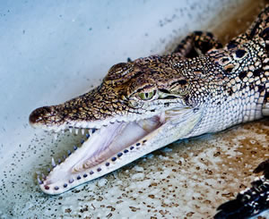

Pete the crocodile
Pete is an adolescent crocodile, who spends most of his time being obnoxious and trying to look cool. Look under that bad boy exterior however, and you'll find a young emo reptile with a heart of gold, who just needs a hug.
Catch up with the zany antics of our wildlife companions. It's nothing but fun when those guys and gals meet up! This endearing movie contains at least 57% of the typical amount of heartwarming friendship and adventure of the average Disney movie.
Pete is an adolescent crocodile, who spends most of his time being obnoxious and trying to look cool. Look under that bad boy exterior however, and you'll find a young emo reptile with a heart of gold, who just needs a hug.
Once a proud father of the pride, Armani is a scruffy, wild-eyed shadow of his former self. You can usually find him searching for food in the dumpster at the back of the supermarket, while muttering darkly about his hatred of deckchairs.

Bruce is the busiest guy in town, especially considering the amount
of dung you get in these parts. Waste not, want not!
says
Bruce, as he scuttles about his work. This tireless guy seldom has
time for others.
Lauke is the plucky hero of the film. Orphaned since birth and raised by a pack of lions, Lauke thinks he is a lion, and can fight like one too. Never afraid to stick up for his friends, he is optimistic and cheery to an almost nauseating level.

These disco dudes and divas care about one thing, having a good time! These self-obsessed hedonists are always searching for fun, so don't get between them and the next party. Most of them are hyperactive to the point that sedatives are a good tactic if you want to strike up a conversation.

Elijah is the crochety old man of the group. He can barely fly
anymore, and walks with a limp, tending to prefer to travel on the
back of one of his friends. He likes to listen to loud drum and bass
on his MP3 player, and constantly harks back to the good old
raves
.